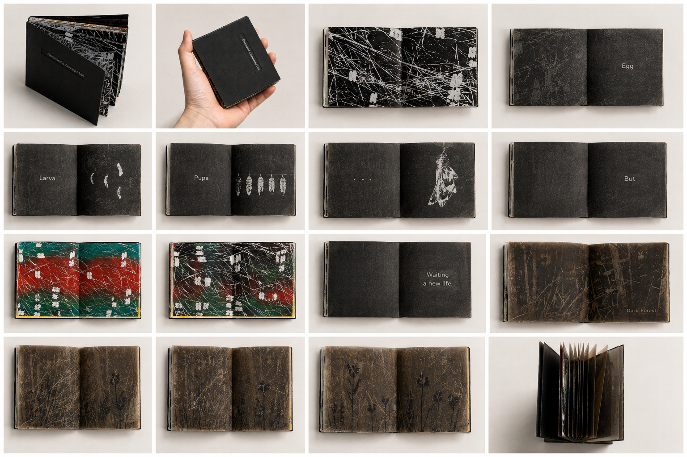

Early Work / 2016
Destroyed a Beautiful Life
A miniature artist book combining printmaking, poetry, and sequential storytelling. Inspired by the life cycle of a butterfly, the work reflects on growth, intervention, and the fragile boundary between care and destruction.
